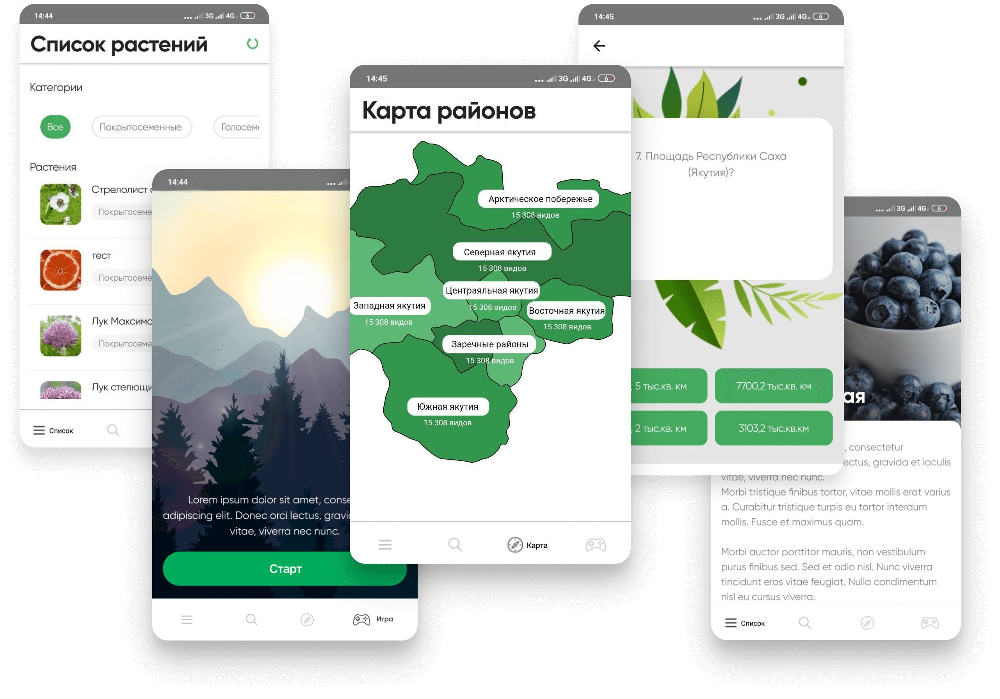

Интерактивная карта позволит пользователям исследовать различные заповедные территории Якутии, оснащенные маркерами с информацией о растениях. Пользователи смогут узнать об их особенностях, местах обитания и защищенном статусе.
Помимо этого, в приложении представлены познавательные игры, которые помогут углубить знания о растениях Якутии, а также развить логическое мышление и внимание. Заповедная Якутия станет прекрасным источником информации и развлечения для всех, кто интересуется природой и экологией Якутии.